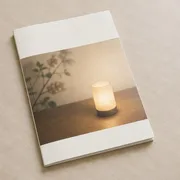

発行物 01
灯野メディカルグループ 年報2026
2025年度の各施設の診療実績、委員会の活動、地域連携の取り組みを1冊にまとめた年報です。毎年7月に発行し、各病院の総合受付と地域連携室でお配りしています。
わたしたちが大切にしていること
病院のそとまで、
灯りを届ける。
退院は、治療のゴールではありません。住み慣れた家に帰り、食事をし、眠り、また次の日を迎える。その毎日に戻っていくための一歩です。わたしたちは、病院の中だけで医療を終わらせず、患者さんとご家族が暮らしへ帰る道のりまで、ひとつながりで見守ります。
治療を選ぶのは患者さんご自身です。検査の結果や治療の選択肢を、専門用語に頼らずにお伝えし、納得して選べるようにお手伝いします。
救急、入院、リハビリ、在宅、介護。施設が変わっても情報が途切れないよう、職種と施設をこえて引き継ぎます。
医療安全と感染対策の委員会を各施設に置き、小さな気づきも共有して、手順を改めつづけます。
かかりつけ医、介護事業所、行政と手を取りあい、地域全体で暮らしを支える仕組みづくりに加わります。
職員が心身ともに元気でいることが、よい医療の土台です。研修と働き方の見直しを続けます。
「先生、これでやっと家に帰れるね」
灯野中央病院で内科医として働いていたころ、退院の日に患者さんからそう言われたことがあります。その方が本当に安心できたのは、家に帰って数週間が過ぎ、訪問看護師が通いはじめてからでした。退院の日は、ご本人とご家族にとって新しい心配が始まる日でもあるのだと、そのとき知りました。
灯野メディカルグループは、救急や手術を担う病院から、リハビリ、在宅医療、介護までを地域の中にそろえてきました。施設を増やすこと自体が目的ではありません。どの入口から来られた方も、次に必要な場所へ迷わずつながれるようにするためです。
静岡市と焼津市で暮らす方々の「帰り道」を、これからも職員一同で照らしていきます。
医療法人社団 灯野会・医療法人社団 湊坂会 理事長真柴 恭一郎
清水区灯野町に「灯野診療所」を開設。内科・外科の19床から歩みをはじめる
医療法人社団 灯野会を設立
診療所を移転・拡充し「灯野中央病院」を開院。救急の受け入れを始める
グループ初の訪問看護ステーションを開設
医療法人社団 湊坂会を設立し、焼津市に「灯野さくら台病院」を開院
介護老人保健施設「灯野ケアホーム清水」を開設
回復期リハビリテーションの専門病院として「丘の上リハビリテーション病院」を開院
灯野中央病院に健診センターを開設
駿河区に「灯野みなと総合病院」を開院
病院食と介護食をつくる「灯野給食センター」が稼働
灯野みなと総合病院に心臓血管センターを開設
地域のかかりつけ医や介護事業所と、日ごろから顔の見える関係をつくっています。
患者さんが病院と地域を行き来するとき、その間に立つのが各病院の地域連携室です。
専門的な検査や入院が必要な方を地域の診療所から受け入れ、症状が落ち着いたらかかりつけ医へお戻しします。検査の予約は医療機関から直接お受けしています。
入院した早い段階から、看護師と医療ソーシャルワーカーが退院後の生活を考えはじめます。ケアマネジャーや訪問看護師を交えた退院前の話し合いも行っています。
自宅でできるリハビリ、食事と血圧、認知症の早期の気づきなどをテーマに、年に10回ほど講座を開いています。町内会や企業への出張も承ります。
患者さんに向き合う職員が、まず元気でいること。
そのために、働き方と体のケアの両方に取り組んでいます。
発行物 01
2025年度の各施設の診療実績、委員会の活動、地域連携の取り組みを1冊にまとめた年報です。毎年7月に発行し、各病院の総合受付と地域連携室でお配りしています。

発行物 02
季節の健康の話題、職員の紹介、講座のお知らせを載せた広報誌です。春・夏・秋・冬の年4回発行し、外来の待合や介護施設、地域の公民館に置いています。
郵送をご希望の方は、お問い合わせフォームの「年報・広報誌の送付」からお申し込みください。
| 名称 | 灯野メディカルグループ（Akarino Medical Group） |
|---|---|
| 運営法人 | 医療法人社団 灯野会 医療法人社団 湊坂会 |
| 理事長 | 真柴 恭一郎 |
| 本部所在地 | 〒424-0899 静岡県静岡市清水区灯野町2-14-8 |
| 連絡先 | TEL 054-099-2718 FAX 054-099-2719 info@akarino-mg.jp（受付 平日 8:30〜17:00） |
| 創業 | 1972年 |
| 施設 | 42施設（病院4・診療所8・健診施設2・介護・福祉施設26・その他2） 施設案内を見る |
| 病床数 | 合計1,010床（灯野中央病院312床・灯野みなと総合病院418床・丘の上リハビリテーション病院160床・灯野さくら台病院120床） |
| 職員数 | 2,460名（2026年4月時点） |